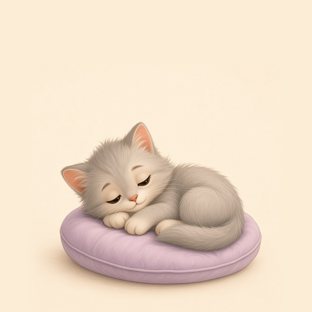

Allow the microphone for this app, then tap Try again.
Room noise: measuring…
Today (only on this phone): 0 sounds from Liam, longest 0.0 s.
Everything stays on this phone. Nothing is recorded, saved or uploaded. Use with Liam's processors on, TV off, and you beside him. His therapist sets his speech goals; this is just play.